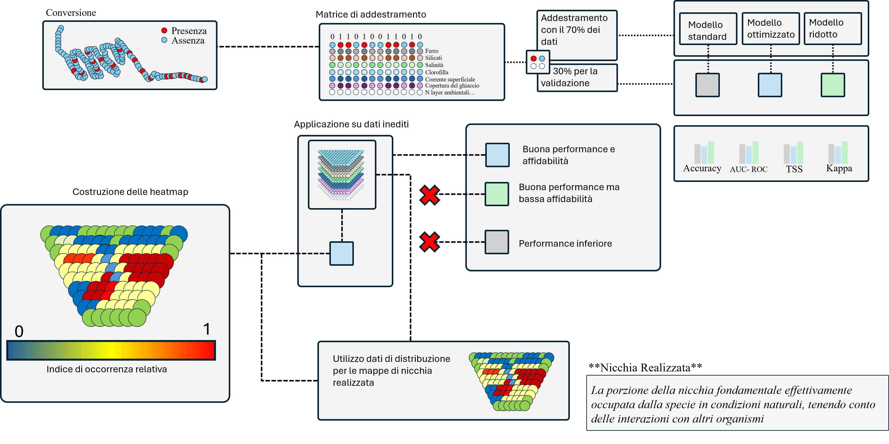

Over the past two centuries, human exploitation and climate change have caused significant shifts in Antarctic marine biodiversity. Krill, a fundamental component of the marine food web, serves as a crucial ecological indicator.
Environmental descriptors such as water temperature, salinity, ice cover, and nutrient availability, along with species interactions, are key factors influencing organism distribution. Machine learning models like Random Forest (RF) effectively predict distributions based on the ecological niche concept. These models have shown promising results in the Ross Sea, particularly for phytoplankton and zooplankton (Pinkerton et al., 2010; Grillo et al., 2022). This thesis aims to develop predictive distribution models for Antarctic krill and top predators using historical data from the X Italian Expedition to the Ross Sea (November–December 1994). The data, classified as "grey literature," will provide a baseline for comparison with present conditions. Both fundamental niche factors (e.g., temperature, salinity, ice cover) and realized niche elements (e.g., competition, predation) will be included in the models to better understand species distribution, as interactions with other organisms can limit access to suitable habitats. Multiple RF models will be trained for each species and compared across three different methodologies to identify the most reliable approach. The best-performing model will then be applied to new environmental data covering the Ross Sea area to create heatmaps illustrating species presence probabilities on a broader scale. These maps will allow for the assessment of whether predicted distributions are influenced by environmental factors, prey-predator dynamics, or competitive interactions, offering insights into the biogeography and ecological dynamics of the Antarctic environment.
The study implemented a pipeline for collecting environmental data directly using R, with input from raster files downloaded from Quantarctica. Multiple models were trained to identify the best-performing ones for both fundamental and realized niches.
The raw data is first processed to classify observations into presence (red) and absence (blue) categories, forming the basis for model training.
Environmental variables such as iron, silicate, salinity, chlorophyll, surface currents, and ice cover are compiled into a structured matrix. The dataset is split into 70% for training and 30% for validation, ensuring a balanced approach for model optimization.
Three machine learning models are trained using the dataset:
The trained models are tested on unseen environmental datasets to assess their predictive accuracy. Predictions fall into three categories:
The output predictions are visualized as heatmaps, where different colors indicate the relative occurrence index (0 to 1), with higher values reflecting a greater probability of species presence.
To refine predictions, the models integrate species distribution data beyond environmental variables, incorporating biotic interactions such as competition and predation. This step helps distinguish between potential and realized habitats.
Model performance is assessed using four key statistical measures:
The final distribution maps reflect the realized niche, i.e., the portion of the fundamental niche actually occupied by the species under natural conditions, considering the influence of other organisms and ecological interactions.
Krill
Adelie Penguin
killer Whale
The use of machine learning to model the distribution of marine organisms has proven highly effective, providing accurate predictions across a wide range of species, from small organisms to apex predators. Some predictions have been validated using historical data, such as the migrations of Adélie penguins and krill distributions. The modeling of large mammals, such as orcas, has shown results consistent with their ecology, despite validation challenges.
However, modeling all key species was not possible due to limited data availability. With more comprehensive datasets, it could be possible to reconstruct the entire Antarctic trophic network. Open data sharing, in accordance with FAIR principles, is crucial to improving model performance. Additionally, a reproducible pipeline has been developed to optimize environmental data retrieval and analysis. This approach could be expanded with open-source software, making machine learning techniques more accessible to the scientific community.